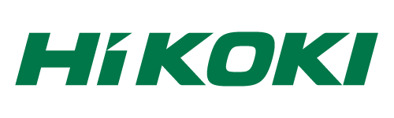

ご支援のお願い
スポンサー

工機ホールディングス株式会社様より、CanSat開発に欠かせない電動工具の提供をいただいております。HiKOKIの電動工具は使いやすく、大変助かっております。
スポンサーを募集しております。 詳細はお問い合わせください。
ご寄付のお願い
- 小型人工衛星、CanSat（模擬惑星探査ローバー）の開発には少なくない資金や設備が必要です。
- また、DERC CanSat プロジェクトは、2018年秋設立の同志社航空宇宙ロケットクラブDERCを前身として2020年度よりローム記念館プロジェクトとして活動しています。この通り、歴史が浅いこともあり、資金の調達に苦労している状況にあります。
さらに、当団体は、学生団体ですからメンバー個人の収支も厳しい状況にあり、会費のみでは運営できない状況にあります。
- ぜひご支援いただけますと幸いです。
なお、なにかご不明な点がございましたら、お問い合わせください。
直接のご寄付
- 同志社ローム記念館プロジェクト・サポート募金では、事務手数料がかかるため、税制上の優遇措置が必要な方を除き可能な限り直接ご寄付いただきたいです。
以下の銀行口座までお振り込みいただいた上で、その旨お問い合わせよりご連絡ください。ささやかながら返礼品と、活動報告をお送り致します。
- ***
ゆうちょ銀行
14450-52091351
ドウシシャコウクウウチュウロケットクラブデルク
***
（当団体の前身である同志社航空宇宙ロケットクラブ名義となっております）
同志社ローム記念館プロジェクト・サポート募金によるご寄付
- 同志社ローム記念館プロジェクト・サポート募金によるご寄付では、条件により、税制上の優遇が受けられます。詳細はをご覧ください。
ご寄付の手順
1. 以下のURLより、「同志社ローム記念館プロジェクト・サポート募金」ページへご移動ください。
2. 寄付申込の欄よりお申込み情報をご記入ください。
3. 寄付申込フォームの「事務局への連絡欄」に「DERC CanSat プロジェクトへ」とご記入ください。
寄付申し込みページ
https://bokin.doshisha.ed.jp/cntrbtn-front/DCF013ActInit.do?fndRsngId=00011